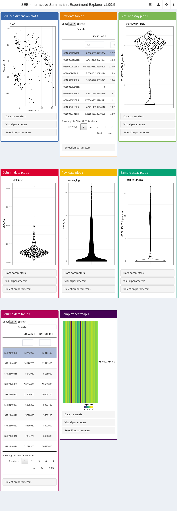

ExperimentColorMap
classvignettes/ecm.Rmd
ecm.RmdCompiled date: 2022-06-29
Last edited: 2018-03-08
License: MIT + file LICENSE
iSEE
coordinates the coloration in every plot via the
ExperimentColorMap class (Rue-Albrecht et al. 2018). Colors for samples
or features are defined from column or row metadata or assay values
using “colormaps”. Each colormap is a function that takes a single
integer argument and returns that number of distinct colors. The
ExperimentColorMap is a container that stores these
functions for use within the iSEE() function. Users can
define their own colormaps to customize coloration for specific assays
or covariates.
For continuous variables, the function will be asked to generate a
number of colors (21, by default). Interpolation will then be performed
internally to generate a color gradient. Users can use existing color
scales like viridis::viridis or
heat.colors:
# Coloring for log-counts:
logcounts_color_fun <- viridis::viridisIt is also possible to use a function that completely ignores any arguments, and simply returns a fixed number of interpolation points:
# Coloring for FPKMs:
fpkm_color_fun <- function(n){
c("black","brown","red","orange","yellow")
}For categorical variables, the function should accept the number of levels and return a color per level. Colors are automatically assigned to factor levels in the specified order of the levels.
# Coloring for the 'driver' metadata variable.
driver_color_fun <- function(n){
RColorBrewer::brewer.pal(n, "Set2")
}Alternatively, the function can ignore its arguments and simply
return a named vector of colors if users want to specify the color for
each level explicitly It is the user’s responsibility to ensure that all
levels are accounted for1. For instance, the following colormap
function will only be compatible with factors of two levels, namely
"Y" and "N":
Colormaps can be defined by users at three different levels:
assays, colData, and
rowData slots, respectively, of the
ExperimentColorMap. This can be useful to easily remember
which assay is currently shown; to apply different color scale limits to
assays that vary on different ranges of values; or display boolean
information in an intuitive way, among many other scenarios.all_discrete and all_continuous slots of the
ExperimentColorMap, as lists of functions named
assays, colData, and
rowData.global_discrete and global_continuous slots of
the ExperimentColorMap.When queried for a specific colormap of any type (assay, column data, or row data), the following process takes place:
ExperimentColorMap.ExperimentColorMap will revert to the default
colormaps.By default, viridis is used as the default continuous
colormap, and hcl is used as the default categorical
colormap.
ExperimentColorMap
We store the set of colormap functions in an instance of the
ExperimentColorMap class. Named functions passed as
assays, colData, or rowData
arguments will be used for coloring data in those slots,
respectively.
library(iSEE)
ecm <- ExperimentColorMap(
assays = list(
counts = heat.colors,
logcounts = logcounts_color_fun,
cufflinks_fpkm = fpkm_color_fun
),
colData = list(
passes_qc_checks_s = qc_color_fun,
driver_1_s = driver_color_fun
),
all_continuous = list(
assays = viridis::plasma
)
)
ecm
#> Class: ExperimentColorMap
#> assays(3): counts logcounts cufflinks_fpkm
#> colData(2): passes_qc_checks_s driver_1_s
#> rowData(0):
#> all_discrete(0):
#> all_continuous(1): assaysUsers can change the defaults for all assays or column data by modifying the shared colormaps. Similarly, users can modify the defaults for all continuous or categorical data by modifying the global colormaps. This is demonstrated below for the continuous variables:
ExperimentColorMap(
all_continuous=list( # shared
assays=viridis::plasma,
colData=viridis::inferno
),
global_continuous=viridis::magma # global
)
#> Class: ExperimentColorMap
#> assays(0):
#> colData(0):
#> rowData(0):
#> all_discrete(0):
#> all_continuous(2): assays colData
#> global_continuous(1)The ExperimentColorMap class offers the following major
features:
colDataColorMap(colormap, "coldata_name") and setters
assayColorMap(colormap, "assay_name") <- colormap_function
assays, colData, rowData),
or shared globally between all categorical or continuous data
scales.Detailed examples on the use of ExperimentColorMap
objects are available in the documentation
?ExperimentColorMap, as well as below.
Here, we use the allen single-cell RNA-seq data set to
demonstrate the use of the ExperimentColorMap class. Using
the sce object that we created previously,
we create an iSEE app with the
SingleCellExperiment object and the colormap generated
above.
app <- iSEE(sce, colormap = ecm)We run this using runApp to open the app on our
browser.
shiny::runApp(app)
Now, choose to color cells by Column data and select
passes_qc_checks_s. We will see that all cells that passed
QC (Y) are colored “forestgreen”, while the ones that
didn’t pass are colored firebrick.
If we color any plot by gene expression, we see that use of counts
follows the heat.colors coloring scheme; use of log-counts
follows the viridis coloring scheme; and use of FPKMs
follows the black-to-yellow scheme we defined in
fpkm_color_fun.
sessionInfo()
#> R version 4.2.0 (2022-04-22)
#> Platform: x86_64-pc-linux-gnu (64-bit)
#> Running under: Ubuntu 20.04.4 LTS
#>
#> Matrix products: default
#> BLAS: /usr/lib/x86_64-linux-gnu/openblas-pthread/libblas.so.3
#> LAPACK: /usr/lib/x86_64-linux-gnu/openblas-pthread/liblapack.so.3
#>
#> locale:
#> [1] LC_CTYPE=en_US.UTF-8 LC_NUMERIC=C
#> [3] LC_TIME=en_US.UTF-8 LC_COLLATE=en_US.UTF-8
#> [5] LC_MONETARY=en_US.UTF-8 LC_MESSAGES=en_US.UTF-8
#> [7] LC_PAPER=en_US.UTF-8 LC_NAME=C
#> [9] LC_ADDRESS=C LC_TELEPHONE=C
#> [11] LC_MEASUREMENT=en_US.UTF-8 LC_IDENTIFICATION=C
#>
#> attached base packages:
#> [1] stats4 stats graphics grDevices utils datasets methods
#> [8] base
#>
#> other attached packages:
#> [1] iSEE_2.9.0 SingleCellExperiment_1.18.0
#> [3] SummarizedExperiment_1.26.1 Biobase_2.56.0
#> [5] GenomicRanges_1.48.0 GenomeInfoDb_1.32.2
#> [7] IRanges_2.30.0 S4Vectors_0.34.0
#> [9] BiocGenerics_0.42.0 MatrixGenerics_1.8.1
#> [11] matrixStats_0.62.0 BiocStyle_2.24.0
#>
#> loaded via a namespace (and not attached):
#> [1] nlme_3.1-158 bitops_1.0-7 fs_1.5.2
#> [4] fontawesome_0.2.2 doParallel_1.0.17 RColorBrewer_1.1-3
#> [7] rprojroot_2.0.3 tools_4.2.0 bslib_0.3.1
#> [10] utf8_1.2.2 R6_2.5.1 DT_0.23
#> [13] vipor_0.4.5 mgcv_1.8-40 DBI_1.1.3
#> [16] colorspace_2.0-3 GetoptLong_1.0.5 tidyselect_1.1.2
#> [19] gridExtra_2.3 compiler_4.2.0 textshaping_0.3.6
#> [22] cli_3.3.0 shinyjs_2.1.0 desc_1.4.1
#> [25] DelayedArray_0.22.0 colourpicker_1.1.1 bookdown_0.27
#> [28] sass_0.4.1 scales_1.2.0 pkgdown_2.0.5
#> [31] systemfonts_1.0.4 stringr_1.4.0 digest_0.6.29
#> [34] rmarkdown_2.14 XVector_0.36.0 pkgconfig_2.0.3
#> [37] htmltools_0.5.2 highr_0.9 fastmap_1.1.0
#> [40] htmlwidgets_1.5.4 rlang_1.0.3 GlobalOptions_0.1.2
#> [43] shiny_1.7.1 shape_1.4.6 jquerylib_0.1.4
#> [46] generics_0.1.2 jsonlite_1.8.0 dplyr_1.0.9
#> [49] RCurl_1.98-1.7 magrittr_2.0.3 GenomeInfoDbData_1.2.8
#> [52] Matrix_1.4-1 Rcpp_1.0.8.3 munsell_0.5.0
#> [55] fansi_1.0.3 viridis_0.6.2 lifecycle_1.0.1
#> [58] rintrojs_0.3.0 stringi_1.7.6 yaml_2.3.5
#> [61] zlibbioc_1.42.0 grid_4.2.0 ggrepel_0.9.1
#> [64] promises_1.2.0.1 parallel_4.2.0 shinydashboard_0.7.2
#> [67] crayon_1.5.1 miniUI_0.1.1.1 lattice_0.20-45
#> [70] splines_4.2.0 circlize_0.4.15 knitr_1.39
#> [73] ComplexHeatmap_2.12.0 pillar_1.7.0 igraph_1.3.2
#> [76] rjson_0.2.21 codetools_0.2-18 glue_1.6.2
#> [79] evaluate_0.15 BiocManager_1.30.18 httpuv_1.6.5
#> [82] png_0.1-7 vctrs_0.4.1 foreach_1.5.2
#> [85] gtable_0.3.0 purrr_0.3.4 clue_0.3-61
#> [88] assertthat_0.2.1 cachem_1.0.6 ggplot2_3.3.6
#> [91] xfun_0.31 mime_0.12 xtable_1.8-4
#> [94] later_1.3.0 ragg_1.2.2 viridisLite_0.4.0
#> [97] tibble_3.1.7 iterators_1.0.14 memoise_2.0.1
#> [100] cluster_2.1.3 shinyWidgets_0.7.0 ellipsis_0.3.2
#> [103] shinyAce_0.4.2
# devtools::session_info()Needless to say, these functions should not be used as shared or global colormaps.↩︎